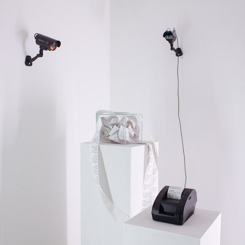

Rakel Vella

The Glass Box was built with the purpose of sensitizing the viewer on online surveillance, encompassing
the feeling of being watched. It is an interactive sculpture built using a Raspberry Pi connected to a
thermal printer and an ultrasonic sensor. The sensor, built into one of the fake cctv cameras, is
constantly detecting the proximity to any viewer that approaches the installation. Once the viewer gets
close, the thermal printer prints out a log of data. The data that is being printed out was gathered
from six participants that took part in an anonymous focus group. The participants sent their google
takeout, which includes data such as; google searches, location history, transactions and audio
recordings.
